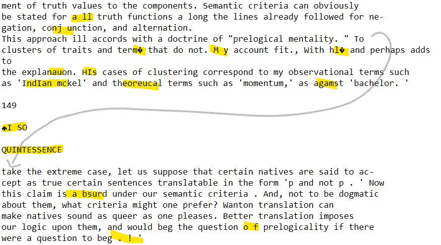
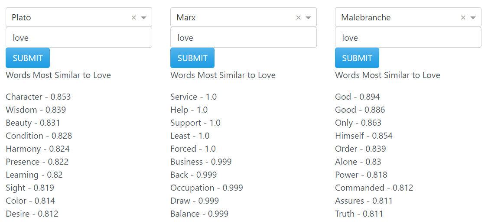

Interpreting Results
Overview
The texts in this corpus come from two primary sources: Project Gutenberg and pdf scans.
These sources were then converted to .txt files before being loaded into jupyter notebooks for data cleaning, exporation, and modeling.
The process of creating the tools on this site was long and went through several iterations, especially as several texts required significant cleaning so that they could be
parsed into meaningful sentences for modeling. For the code used in this project, see the github repo here.
The resulting features work as intended, but the data they present may not be clearly interpretable. Below we explain how the site works under the hood so that users can
better understand the results they get.
Data Cleaning & Preparation
While some texts were quite easy to deal with, many of them .txt files in our corpus were full of odd errors and strange insertions. When a pdf is converted to a .txt file, the headers on each page become inserted into the middle of sentences, page numbers and footnotes run amuk, and marginal notes or strange formatting can make the text totally illegible. For more on the trials of dealing with text data, see my article here. Below is an example of the kind of textual problems one could expect in some of the more difficult books. 
Obviously, there was a lot of work to do. While I won't bore the reader with the details, it is worth noting a couple things that might impact the way results are returned.
First, all numbers were removed from the texts.
This was a clean answer to the problem with page numbers, and philosophers rarely use numbers to mean anything substantive. Still, if you find some sentence that's missing a year, now you know why.
Second, in the process of cleaning, we replaced a lot of odd characters with spaces. While this rarely caused problems in some cases it meant that words that had
an odd character inside of them were broken into two words. For the most part, we were able to go back and fix this, but if you find some word particle somewhere,
that is the cause of it.
In addition to cleaning errors in the data itself, the book had to be broken into sentences and, for modeling, into individual words.
This tokenization was done using the spacy library, a robust tokenizer that is able to parse the grammar of English sentences and break long strings
into individual sentences intelligently. That said, it is not infallible, and one can find the occasional line in the dataset that clearly ends too early or too late.
Despite these occasional mishaps, the overall result of our labours was a relatively clean dataset. That said, one will inevitably run into odd sentences, sentences that are clearly meant as footnotes, or words that should be different than they are.
If you enounter any of these, please take a moment to contact us so we can fix the issue for future iterations of the data set.
Classifier
When working with the data, we developed several classification models. In some cases, we were able to achieve almost 80% accuracy over the original 10 classes in the corpus. These powerful classification models used deep NLP techniques, with the result that the models were memory-intensive and took a long time to classify new texts. For this site, we wanted something more lightweight. So here we use a Multinomial Naive Bayesian classifier with just above 77% accuracy.
A Naive Bayes classifier essentially takes every word in the dataset and calculates the probability of a given word appearing in a given school. When applied to new text, it calculates the overall probability of that set of words appearing for each school, and returns the school corresponding to the highest probability. This method is thus able to provide us with a word-by-word probability score, showing which words pushed the model to classify a text as belonging to a given school.
Of course, the model was trained on philosophical texts, not on everyday speech. So one oddity that we found early on is that many everyday texts were classified as belonging to Platonic simply because they made use of personal pronouns. After all, Plato writes dialogues where other authors write formal manuscripts, so his texts have a lot more everyday expressions and conversational words. To correct for this and make the classifier more illuminating, the current funtion cleans input text by removing words that pull towards certain schools without reflecting anything substantive about the text's idealogy. Another option would have been to remove these stopwords at the modeling stage, before classification, but doing so reduced overall model accuracy.
So then, what does the output of the classifier show? It shows what school of philosophy a given text is most aligned with, and breaks down this decision on a word-by-word basis, showing how much each word pulled the model towards or away from various schools.
Word Use Analysis
The analysis of how each philosopher and school uses their language is one of the most illuminating features available on this site.
This tool was developed using the word vector tools available in the Python gensim library and initial vectors provided by GloVe word embeddings.
Word similarity is then computed mathematically by comparing the vectors for each word or phrase.
Let's look at an example to see how we might interpret the results of all that.

Here we can see how three different philosophers use the word 'love.' Plato's use is strongly aligned with his of other words like 'character', 'harmony',
and 'wisdom.' This makes sense since he talks often about the 'love of wisdom' and his story of the two halves who seek unity fits well with a conception of love that
emphasizes harmony between people's characters. On the other hand, Marx seems to think of in terms of service and support; love for him is less about harmonious unity
and more about actually helping and serving others. And last we Malebranche, who's conception of love seems definitely colored by his religious orientation. 'Love' is most
commonly associated with 'God' in his work, and the other terms seem to make more sense when you consider them in a religious context too. In general, then,
the word use analysis function gives words that often appear in the context as the search query; in ideal cases, this means they are roughly synonymous with the query term.
For a more technical understanding of what's going on, here's how the word vectors are constructed. First, the program goes through every sentence in the corpus.
For each sentence, it checks each word, looking at what other words appear close to it. At the end of this process, then, we have a list of every word
in the corpus, together with a count of how many times each other word appeared next to it. And while the math from here gets a little complex,
the basic idea is that words that tend to appear in the same contexts have the same "meaning."
How does this help us understand the results? It means that when the model says that two words are similar, what it really means is that they tend
to appear next to the same set of surrounding words. For the most part, this actually is indicative of how a word is used, especially since the model was initialized
using an enormous set of words and contexts. A quick glance at the results on the word use analysis page bears this out - Heidegger
does use 'dasein' to mean something close to 'being', Kant does use 'concept' in a way quite similar to his use of 'representation', and Marx consistently mentions
'capital' and 'surplus value' in the same breath. While these terms are clearly not strict synonyms for these authors, they are closely aligned concepts, and using the word
analysis tool can thus help us to understand how concepts are grouped together by various thinkers.
Still, it's worth noting that there are several cases where words with opposite meanings also appear in the same contexts. These would appear as similar words
according to the model (because of their shared contexts) while obviously being opposite in meaning. Understanding how the word vectors are generated
can help make sense of this phenomenon: similar context indicates similar semantic alignment, and being directly opposed in meaning is one kind of semantic alignment.
Word vector analysis also requires a large body of text in order to be useful. If used on a short text, then the small sample size can give excessive weight to outliers. In this case,
the outliers are words that appear rarely and thus end up with very high
correlations to the words they appear next to, leading to some strange and misleading results. If you use this page and get answers you find nonsensical, we recommend you
check (1) how many texts from your author are in the corpus (can be found on the stats page), or (2) how many times your query shows up in that source's
texts (can be examined via the search page).
Text Statistics
The text statistics feature present a number of different data points about a given title, author, or school. Some of these,
like average word length, are pretty straightforward. Others might warrant a brief explanation.
For each school, you can find two graphs. The first of these is a chart depicting the most common words in that given source.
To generate this chart, a lot of very common words are removed from the text - otherwise 'the' would be the winning word for each source
and the chart would hardly be very informative. At this time, this feature is perhaps a little overspecific: - 'ideas' is
counted as a different word than 'idea.' Unifying these words that clearly have the core meaning is something we are working on for future iterations of
the project.
A similar process is done for the second chart as well. This latter chart depicts the most common bigrams, or two-word phrases, in each source.
Note that a two-word phrase may include any number of common connective terms like 'of' or 'to.' So 'being-in-the-world' would be rendered as a
bigram, since 'in' and 'the' are common enough not to count. This feature can be slightly more informative than raw word frequency, since many sources
have phrases that are entirely unique to them (consider 'pure reason' for Kant or 'simple idea' for the empiricists).
Overall, this tool is a good way to get a quick picture of the core concepts of a given source so that you can orient yourself in reading the actual
text itself.
Corpus Search
This feature is quite straightforward. You choose a school, a thinker, or a text, and you get back every instance of a given phrase in the given source.
The results are not case-sensitive, but they can be impacted by alternate spellings or random errors in the texts. Additionally, the feature is sensitive
to the different versions of a word; it will treat 'idea', 'ideas', 'ideal', and 'idealism' all as distinct queries. Depending on what you're looking for, it may
be prudent to search for different versions of your key term.
Unfortunately, there is no citation generator or pagination connected to the returned sentences, but that is a feature we may add in the future.
Thank you for your interest in the project! Hopefully this page has been helpful, but if you have any other questions about how to interpret any of the features on this site, please feel free to contact me at kcalizadeh@gmail.com.